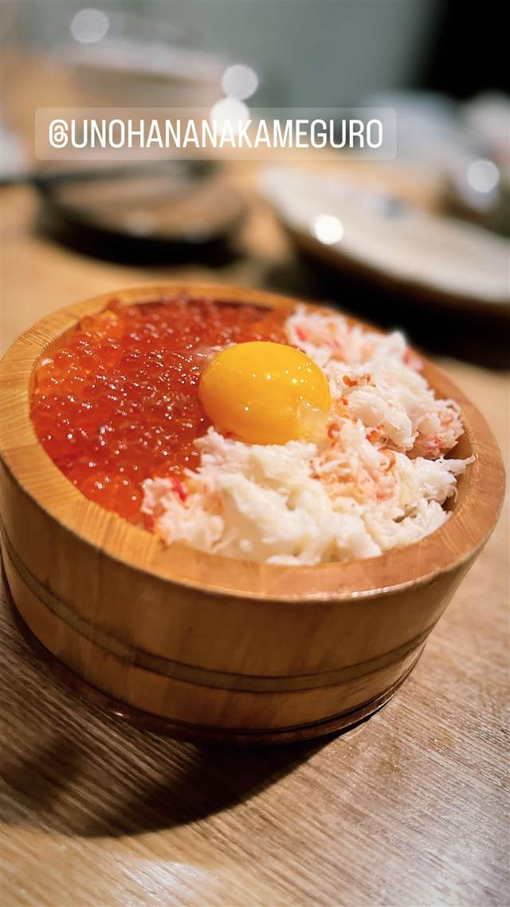

魚の花（うのはな）／うのはな離れ 菜の花
高知の魚介と福島の野菜を炭火で焼き上げる隠れ家
うのはな 中目黒
中目黒の人気居酒屋「魚の花」が手がける“離れ”。高知の魚介と福島の野菜を炭火で焼き上げる、隠れ家的な大人の一軒。
TRIVIA
へえ、という話
- 同じグループの本店「魚の花」は月商900万円超の人気店として飲食業界メディアに取り上げられている
- 店名「菜の花」は本店「魚の花」に呼応する名づけ
| 創業 | 2023年3月開業とみられる（本店「魚の花」は2022年5月開業、その2号店・「離れ」として登場）。 |
|---|---|
| 系譜 | 「魚の花（うのはな）」の“離れ”（2号店）。本店は渋谷の人気居酒屋「魚屋 豪椀」で約10年修業した店主が独立して開いた店。 |
| 看板 | 炭火焼きの魚介・野菜料理。 |
| こだわり | 高知の契約漁師から仕入れる魚介と、福島の契約農家の野菜を炭火でじっくり焼き上げる。 |
| 掲載・受賞 | 本店「魚の花」は月商900万〜1000万円超と紹介される繁盛店。 |
| 予算 | 夜 ¥5,000～¥5,999 |
| 予約 | 予約可 |
| 場所 | 中目黒 東京都目黒区青葉台1-27-12 |
| 注意 | 中目黒駅西口から徒歩7〜8分、山手通り沿いの隠れ家的な店構え。 |
食べたもの：いくらカニ丼
NEARBY
近い店・同じ系統の店
-
 ★14
焼肉 中目黒
小野田商店
中目黒の路地裏、七輪で焼く500円前後のホルモン
夜 ¥3,000～¥3,999
★14
焼肉 中目黒
小野田商店
中目黒の路地裏、七輪で焼く500円前後のホルモン
夜 ¥3,000～¥3,999
-
 ★12
焼肉 中目黒駅
びーふてい 中目黒店
1988年創業、和牛一頭買いで味わう名物ガツン焼き
夜 ¥6,000～¥7,999
★12
焼肉 中目黒駅
びーふてい 中目黒店
1988年創業、和牛一頭買いで味わう名物ガツン焼き
夜 ¥6,000～¥7,999
-
 ピザ 中目黒駅
ピッツエリア エ トラットリア ダ・イーサ（Pizzeria e trattoria da ISA）
世界ピッツァ選手権優勝のナポリピッツァ職人が焼くマルゲリータ
昼 ¥2,000～¥2,999 夜 ¥3,000～¥3,999
ピザ 中目黒駅
ピッツエリア エ トラットリア ダ・イーサ（Pizzeria e trattoria da ISA）
世界ピッツァ選手権優勝のナポリピッツァ職人が焼くマルゲリータ
昼 ¥2,000～¥2,999 夜 ¥3,000～¥3,999
-
 パスタ 中目黒駅
中目黒 ピッツェリア8
350℃の石窯で焼く本格ナポリピッツァと自家製生パスタ
昼 ¥1,000～¥1,999 夜 ¥3,000～¥3,999
パスタ 中目黒駅
中目黒 ピッツェリア8
350℃の石窯で焼く本格ナポリピッツァと自家製生パスタ
昼 ¥1,000～¥1,999 夜 ¥3,000～¥3,999
-
 イタリアン 中目黒駅
関谷スパゲティ
真空圧縮で気泡を抜いた自家製極太麺のナポリタンが730円均一
昼 ～¥999 夜 ～¥999
イタリアン 中目黒駅
関谷スパゲティ
真空圧縮で気泡を抜いた自家製極太麺のナポリタンが730円均一
昼 ～¥999 夜 ～¥999
-
 ピザ 中目黒駅
聖林館（セイリンカン）
マルゲリータとマリナーラの2種のみ、国産小麦を長期熟成
ピザ 中目黒駅
聖林館（セイリンカン）
マルゲリータとマリナーラの2種のみ、国産小麦を長期熟成